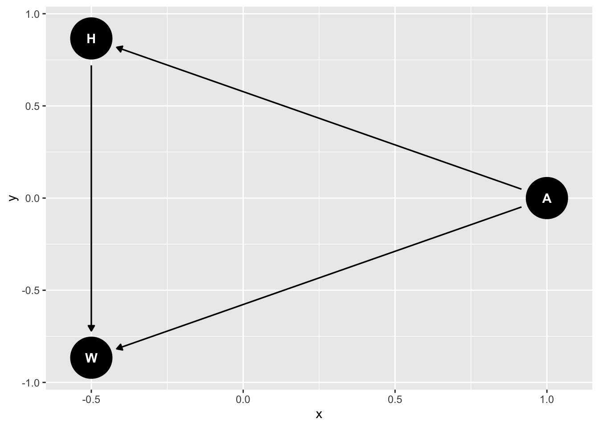
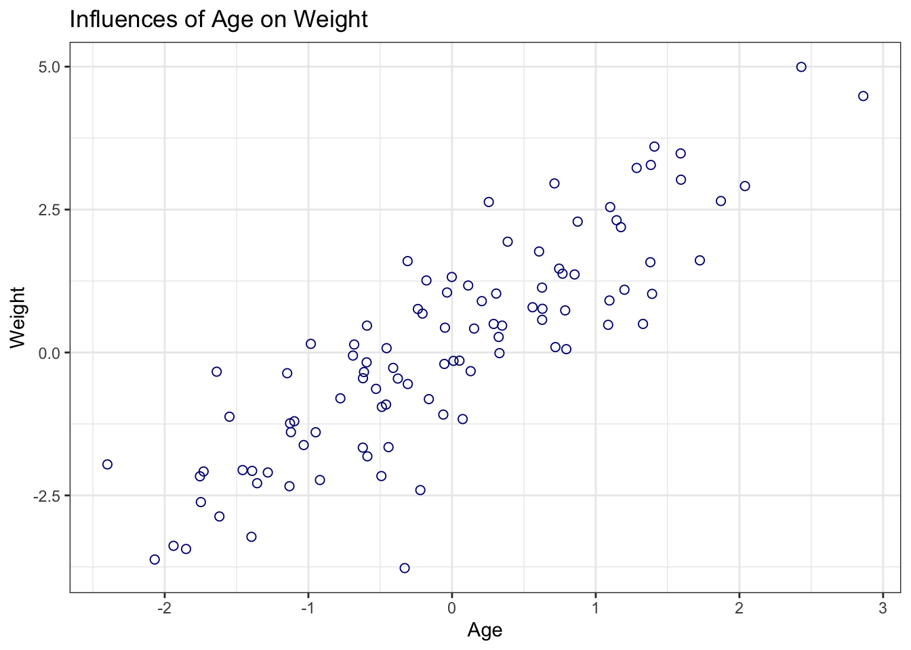
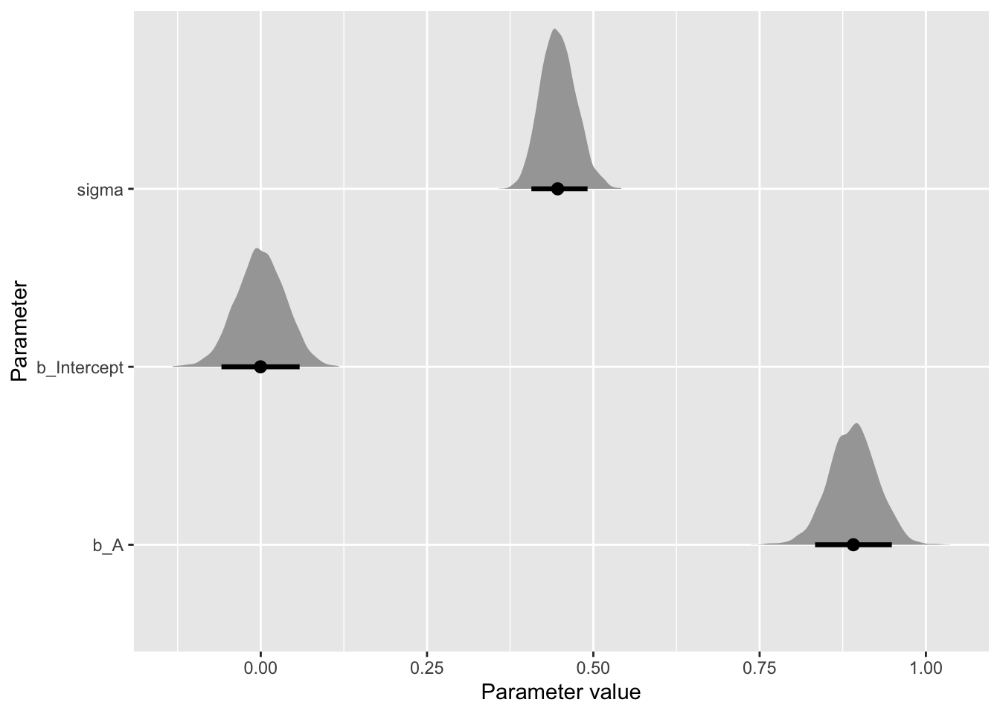

1. From the Howell1 dataset, consider only the people younger than 13 years old. Estimate the causal association between age and weight. Assume that age influences weight through two paths. First, age influences height, and height influences weight. Second, age directly influences weight through age- related changes in muscle growth and body proportions. Draw the DAG that represents these causal relationships. And then write a generative simulation that takes age as an input and simulates height and weight, obeying the relationships in the DAG.
Data preparation
rm(list =ls())library(ggdag)
Attaching package: 'ggdag'
The following object is masked from 'package:stats':
filter
── Conflicts ────────────────────────────────────────── tidyverse_conflicts() ──
✖ dplyr::filter() masks ggdag::filter(), stats::filter()
✖ dplyr::lag() masks stats::lag()
ℹ Use the conflicted package (<http://conflicted.r-lib.org/>) to force all conflicts to become errors
library(brms)
Loading required package: Rcpp
Loading 'brms' package (version 2.21.0). Useful instructions
can be found by typing help('brms'). A more detailed introduction
to the package is available through vignette('brms_overview').
Attaching package: 'brms'
The following object is masked from 'package:stats':
ar
library(tidybayes)
Attaching package: 'tidybayes'
The following objects are masked from 'package:brms':
dstudent_t, pstudent_t, qstudent_t, rstudent_t
library(here)
here() starts at /Users/gharda/Library/CloudStorage/OneDrive-Personal/1 Projects/Statistical Rethinking/statistical-rethinking
dag <-dagify( H ~ A, W ~ H, W ~ A,exposure =c("A", "H"),outcome ="W" )tidy_dagitty(dag)
# A DAG with 3 nodes and 3 edges
#
# Exposure: A, H
# Outcome: W
#
# A tibble: 4 × 8
name x y direction to xend yend circular
<chr> <dbl> <dbl> <fct> <chr> <dbl> <dbl> <lgl>
1 A 0.317 0.134 -> H 0.920 0.937 FALSE
2 A 0.317 0.134 -> W -0.0771 1.06 FALSE
3 H 0.920 0.937 -> W -0.0771 1.06 FALSE
4 W -0.0771 1.06 <NA> <NA> NA NA FALSE
ggdag(dag, layout ="circle")

Simulate data
n <-100sim <-tibble(A =rnorm(n, mean =0, sd =1),H =rnorm(n, mean = A *2, sd =1),W =rnorm(n, mean = A + H *1/4, sd =1))sim %>%ggplot(aes(x = A, y = W)) +geom_point(shape =1, size =2, color ="navyblue") +theme_bw() +labs(x ="Age", y ="Weight", title ="Influences of Age on Weight")

2. Estimate the total causal effect of each year of growth on weight.
Mutate data
d <- d %>%mutate(A = (age -mean(age)) /sd(age),H = (height -mean(height)) /sd(height),W = (weight -mean(weight)) /sd(weight) )
b1 <-brm(data = d,family = gaussian,formula = W ~1+ A,prior =c(prior(normal(0, .2), class = Intercept),prior(normal(0, .5), class = b),prior(exponential(1), class = sigma)),iter =2000, warmup =1000, chains =4, cores =4,seed =5,file ="fits/b1")
Compiling Stan program...
Trying to compile a simple C file
Running /Library/Frameworks/R.framework/Resources/bin/R CMD SHLIB foo.c
using C compiler: ‘Apple clang version 15.0.0 (clang-1500.3.9.4)’
using SDK: ‘MacOSX14.4.sdk’
clang -arch arm64 -I"/Library/Frameworks/R.framework/Resources/include" -DNDEBUG -I"/Users/gharda/Library/CloudStorage/OneDrive-Personal/1 Projects/Statistical Rethinking/statistical-rethinking/renv/library/macos/R-4.4/aarch64-apple-darwin20/Rcpp/include/" -I"/Users/gharda/Library/CloudStorage/OneDrive-Personal/1 Projects/Statistical Rethinking/statistical-rethinking/renv/library/macos/R-4.4/aarch64-apple-darwin20/RcppEigen/include/" -I"/Users/gharda/Library/CloudStorage/OneDrive-Personal/1 Projects/Statistical Rethinking/statistical-rethinking/renv/library/macos/R-4.4/aarch64-apple-darwin20/RcppEigen/include/unsupported" -I"/Users/gharda/Library/CloudStorage/OneDrive-Personal/1 Projects/Statistical Rethinking/statistical-rethinking/renv/library/macos/R-4.4/aarch64-apple-darwin20/BH/include" -I"/Users/gharda/Library/Caches/org.R-project.R/R/renv/cache/v5/macos/R-4.4/aarch64-apple-darwin20/StanHeaders/2.32.10/c35dc5b81d7ffb1018aa090dff364ecb/StanHeaders/include/src/" -I"/Users/gharda/Library/Caches/org.R-project.R/R/renv/cache/v5/macos/R-4.4/aarch64-apple-darwin20/StanHeaders/2.32.10/c35dc5b81d7ffb1018aa090dff364ecb/StanHeaders/include/" -I"/Users/gharda/Library/Caches/org.R-project.R/R/renv/cache/v5/macos/R-4.4/aarch64-apple-darwin20/RcppParallel/5.1.8/21c1466a17de6b1f5f4bc0569868775e/RcppParallel/include/" -I"/Users/gharda/Library/Caches/org.R-project.R/R/renv/cache/v5/macos/R-4.4/aarch64-apple-darwin20/rstan/2.32.6/8a5b5978f888a3477c116e0395d006f8/rstan/include" -DEIGEN_NO_DEBUG -DBOOST_DISABLE_ASSERTS -DBOOST_PENDING_INTEGER_LOG2_HPP -DSTAN_THREADS -DUSE_STANC3 -DSTRICT_R_HEADERS -DBOOST_PHOENIX_NO_VARIADIC_EXPRESSION -D_HAS_AUTO_PTR_ETC=0 -include '/Users/gharda/Library/Caches/org.R-project.R/R/renv/cache/v5/macos/R-4.4/aarch64-apple-darwin20/StanHeaders/2.32.10/c35dc5b81d7ffb1018aa090dff364ecb/StanHeaders/include/stan/math/prim/fun/Eigen.hpp' -D_REENTRANT -DRCPP_PARALLEL_USE_TBB=1 -I/opt/R/arm64/include -fPIC -falign-functions=64 -Wall -g -O2 -c foo.c -o foo.o
In file included from <built-in>:1:
In file included from /Users/gharda/Library/Caches/org.R-project.R/R/renv/cache/v5/macos/R-4.4/aarch64-apple-darwin20/StanHeaders/2.32.10/c35dc5b81d7ffb1018aa090dff364ecb/StanHeaders/include/stan/math/prim/fun/Eigen.hpp:22:
In file included from /Users/gharda/Library/CloudStorage/OneDrive-Personal/1 Projects/Statistical Rethinking/statistical-rethinking/renv/library/macos/R-4.4/aarch64-apple-darwin20/RcppEigen/include/Eigen/Dense:1:
In file included from /Users/gharda/Library/CloudStorage/OneDrive-Personal/1 Projects/Statistical Rethinking/statistical-rethinking/renv/library/macos/R-4.4/aarch64-apple-darwin20/RcppEigen/include/Eigen/Core:19:
/Users/gharda/Library/CloudStorage/OneDrive-Personal/1 Projects/Statistical Rethinking/statistical-rethinking/renv/library/macos/R-4.4/aarch64-apple-darwin20/RcppEigen/include/Eigen/src/Core/util/Macros.h:679:10: fatal error: 'cmath' file not found
#include <cmath>
^~~~~~~
1 error generated.
make: *** [foo.o] Error 1
Start sampling
draws <-gather_draws(b1, b_Intercept, b_A, sigma)mean_qi(draws, .width = .89)
ggplot(draws, aes(x = .value, y = .variable)) +stat_halfeye(.width = .89) +labs(x ="Parameter value", y ="Parameter")

3. Now suppose the causal association between age and weight might be different for boys and girls. Use a single linear regression, with a categorical variable for sex, to estimate the total causal effect of age on weight separately for boys and girls. How do girls and boys differ? Provide one or more posterior contrasts as a summary.